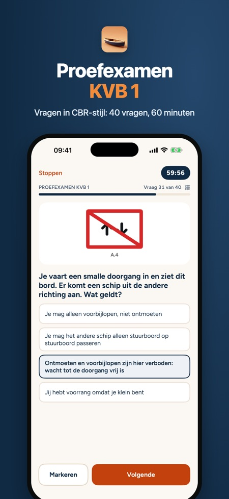
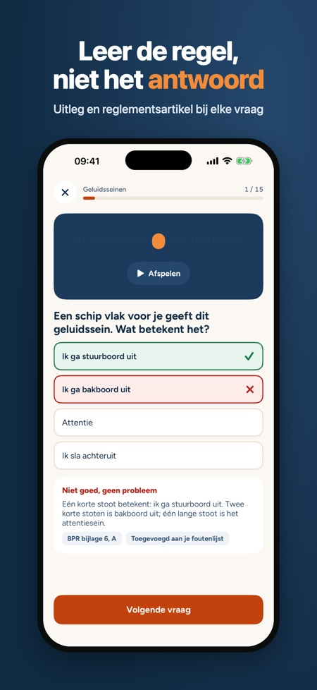
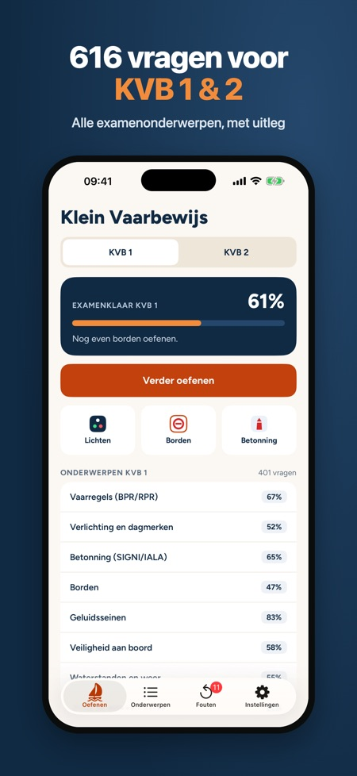

Oefen voor je Klein Vaarbewijs 1 of 2 in korte rondjes, waar je ook bent. Je ziet meteen wat goed en fout is, met uitleg bij elke vraag.



Vaarbewijs KVB 1 & 2 Oefenen is een onafhankelijke iPhone- en iPad-app van Baytech BV om te oefenen voor het CBR-examen Klein Vaarbewijs 1 en 2. Je oefent met 616 eigen vragen met uitleg, proefexamens met tijd en puntentelling (KVB 1: 40 vragen in 60 minuten, KVB 2: 27 vragen in 90 minuten met open rekenvragen) en kaartlezen en koersberekening voor KVB 2. De app werkt zonder internet en met één aankoop van € 9,99 open je alles, zonder abonnement.
| Vragen | Taal | Zonder internet | Prijs | |
|---|---|---|---|---|
| Deze app | 616 (KVB 1 en 2) | Nederlands, Engels, Duits | Ja | € 9,99, één aankoop |
| CBR voorbeeldexamens KVB 1 en KVB 2 (cbr.nl) | 1 voorbeeldexamen per examen | Nederlands | € 0 | |
| Vaarbewijs Pro | Examens van 40 vragen (vooral KVB 1) | Nederlands, Engelse woordenset | Niet vermeld | Abonnement € 29,99/mnd, € 99,99/jaar |
| Klein Vaarbewijs 1 & 2 Examen | KVB 1, KVB 2 en marifonie | Nederlands | Niet vermeld | € 9,99 (KVB 1 + 2) |
| We Vaarbewijs | 2.000+ (ook andere landen) | 7 talen | Ja | € 9,99, één aankoop |
Bron: app-beschrijvingen en prijzen in de Nederlandse App Store, gecontroleerd op 2 november 2026. Gebruik ook de voorbeeldexamens van het CBR; geen enkele app is van het CBR.
Voor Klein Vaarbewijs 1 en Klein Vaarbewijs 2.
616 eigen oefenvragen over alle examenonderwerpen van KVB 1 en KVB 2, met uitleg bij elke vraag.
KVB 1 heeft 40 vragen in 60 minuten, KVB 2 heeft 27 vragen in 90 minuten, inclusief open rekenvragen.
Ja, voor KVB 2 zijn er kaartlezen, getijden en koersberekening met oefenkaarten.
Ja. Geen account en geen advertenties.
Vaarregels (BPR/RPR) en één proefexamen kun je zonder aankoop oefenen.
Nee. Met één aankoop open je alles van KVB 1 én KVB 2. Geen abonnement.
Nee, de vragen zijn zelf geschreven op basis van de openbare reglementen en de app is niet verbonden aan het CBR. Kijk voor de actuele exameneisen op de website van het CBR.
Oefen voor je Klein Vaarbewijs 1 of 2 in korte rondjes, waar je ook bent. Je ziet meteen wat goed en fout is, met uitleg bij elke vraag.
WAT JE KRIJGT
• 616 eigen oefenvragen over alle examenonderwerpen van KVB 1 en KVB 2
• Uitleg bij elke vraag; bij vaarregels, lichten, borden en geluidsseinen met het artikel uit BPR, RPR of SRW
• Proefexamens met tijd en puntentelling volgens het examenformat: KVB 1 met 40 vragen in 60 minuten, KVB 2 met 27 vragen in 90 minuten, inclusief open rekenvragen
• Lichtenkaarten: navigatieverlichting van voren, achteren en opzij, plus dagmerken
• Borden, betonning (SIGNI en IALA) en geluidsseinen die je laat afspelen
• Kaartlezen, getijden en koersberekening voor KVB 2, met oefenkaarten
• Foutenlijst: een vraag gaat er pas af als je hem twee keer op rij goed hebt
• Examenklaar-percentage, examendatum en een dagelijkse herinnering
ZO WERKT HET
Kies KVB 1 of KVB 2. Je oefent per onderwerp of gewoon verder waar je was. De app onthoudt wat je lastig vindt en laat dat vaker terugkomen. Doe een proefexamen als je denkt dat je klaar bent en zie per onderdeel hoe je ervoor staat.
ÉÉN KEER BETALEN
Vaarregels (BPR/RPR) en één proefexamen kun je zonder aankoop oefenen. Met één aankoop open je alles van KVB 1 én KVB 2. Geen abonnement, geen account, geen advertenties. Werkt zonder internet.
GOED OM TE WETEN
De vragen zijn zelf geschreven op basis van de openbare reglementen. Deze app is niet verbonden aan het CBR. Kijk voor de actuele exameneisen op de website van het CBR.